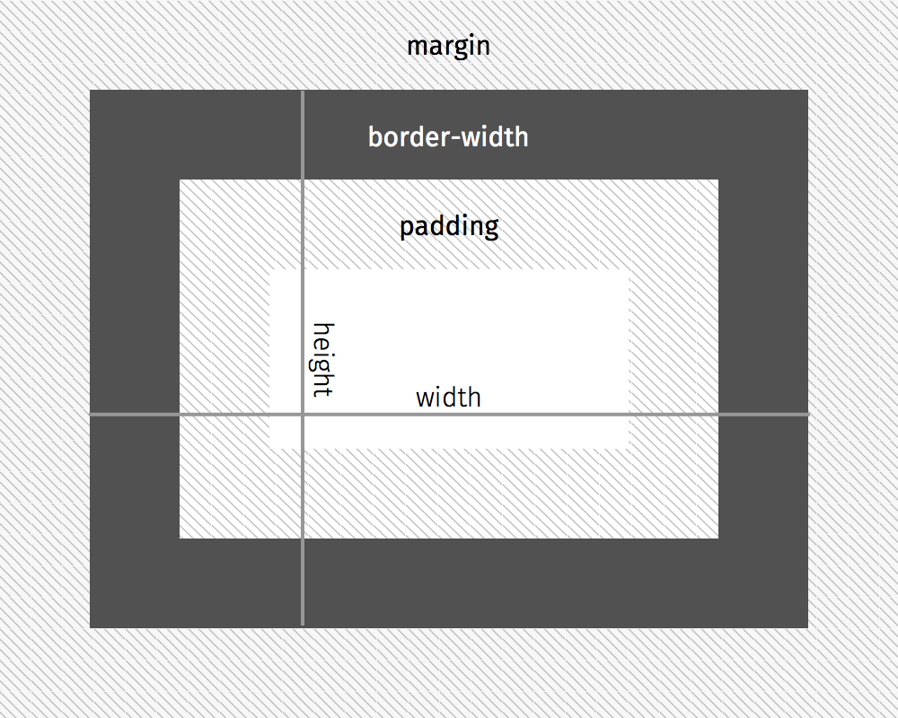

Interaktive Prototypen
Übersicht | Einheit 4
- Wiederholung: id, class
- Wiederholung: <div>, <span>
- Wiederholung: Das Box-Modell
- Größenangaben
- float
- display
- CSS-Normalize
Wiederholung | Einheit 3 | id, class
Id
<h1 id="einmalig">Inhalt</h1>
Class
<h1 class="mehrmals">Inhalt</h1>
Wiederholung | Einheit 3 | Einfache Selektoren
#code-snippet-container
.code-snippet-container
Wiederholung | Einheit 3 | Einfache Selektoren
h1.title
h1 .title
article h1.title
h1.title, h2.title
Wiederholung | Einheit 3 | <div>, <span>
<div>
<div id="Block-Element">Inhalt</div>
<span>
<span class="Inline-Element">Inhalt</span>
Wiederholung | Einheit 3 | Das Box-Modell
Wiederholung | Einheit 3 | Das Box-Modell
body {
box-sizing: border-box;
}
Wiederholung | Einheit 3 | Das Box-Modell
div {
margin: 40px;
padding-left: 20px;
padding-right: 20px;
padding-top: 10px;
padding-bottom: 10px;
height: 300px;
width: 400px;
border-width: 1px;
background-color: #FF0000;
}
Größenangaben
Pixel
div {
width: 200px;
}
Größenangaben
Prozent
Relativ zum Elternelement
div {
width: 50%;
}
Größenangaben
em
font-size (des aktuellen Elements)
div {
font-size: 20px;
width: 5em; /* 5 * 20px = 100px */
}
Größenangaben
rem
font-size (wie geerbt)
html {
font-size: 15px;
}
div {
font-size 20px;
width: 5rem; /* 5 * 15px = 75px */
}
float
div {
float: left;
}
div {
float: right;
}
div {
clear: both;
}
clearfix
.clearfix:after {
content: ".";
display: block;
clear: both;
visibility: hidden;
line-height: 0;
height: 0;
}
display
img {
display: block;
}
div {
display: inline;
}
display
div {
display: inline-block;
}
CSS-Normalize
/einheit-04/normalize.css
/*! normalize.css v3.0.2 | MIT License | git.io/normalize */
/**
* 1. Set default font family to sans-serif.
* 2. Prevent iOS text size adjust after orientation change, without disabling
* user zoom.
*/
html {
font-family: sans-serif; /* 1 */
-ms-text-size-adjust: 100%; /* 2 */
-webkit-text-size-adjust: 100%; /* 2 */
box-sizing: border-box;
}
/**
* Remove default margin.
*/
body {
margin: 0;
}
/* HTML5 display definitions
========================================================================== */
/**
* Correct `block` display not defined for any HTML5 element in IE 8/9.
* Correct `block` display not defined for `details` or `summary` in IE 10/11
* and Firefox.
* Correct `block` display not defined for `main` in IE 11.
*/
article,
aside,
details,
figcaption,
figure,
footer,
header,
hgroup,
main,
menu,
nav,
section,
summary {
display: block;
}
/**
* 1. Correct `inline-block` display not defined in IE 8/9.
* 2. Normalize vertical alignment of `progress` in Chrome, Firefox, and Opera.
*/
audio,
canvas,
progress,
video {
display: inline-block; /* 1 */
vertical-align: baseline; /* 2 */
}
/**
* Prevent modern browsers from displaying `audio` without controls.
* Remove excess height in iOS 5 devices.
*/
audio:not([controls]) {
display: none;
height: 0;
}
/**
* Address `[hidden]` styling not present in IE 8/9/10.
* Hide the `template` element in IE 8/9/11, Safari, and Firefox < 22.
*/
[hidden],
template {
display: none;
}
/* Links
========================================================================== */
/**
* Remove the gray background color from active links in IE 10.
*/
a {
background-color: transparent;
}
/**
* Improve readability when focused and also mouse hovered in all browsers.
*/
a:active,
a:hover {
outline: 0;
}
/* Text-level semantics
========================================================================== */
/**
* Address styling not present in IE 8/9/10/11, Safari, and Chrome.
*/
abbr[title] {
border-bottom: 1px dotted;
}
/**
* Address style set to `bolder` in Firefox 4+, Safari, and Chrome.
*/
b, strong {
font-weight: bold;
}
/**
* Address styling not present in Safari and Chrome.
*/
dfn {
font-style: italic;
}
/**
* Address variable `h1` font-size and margin within `section` and `article`
* contexts in Firefox 4+, Safari, and Chrome.
*/
h1 {
font-size: 2em;
margin: 0.67em 0;
}
/**
* Address styling not present in IE 8/9.
*/
mark {
background: #ff0;
color: #000;
}
/**
* Address inconsistent and variable font size in all browsers.
*/
small {
font-size: 80%;
}
/**
* Prevent `sub` and `sup` affecting `line-height` in all browsers.
*/
sub,
sup {
font-size: 75%;
line-height: 0;
position: relative;
vertical-align: baseline;
}
sup {
top: -0.5em;
}
sub {
bottom: -0.25em;
}
/* Embedded content
========================================================================== */
/**
* Remove border when inside `a` element in IE 8/9/10.
*/
img {
border: 0;
}
/**
* Correct overflow not hidden in IE 9/10/11.
*/
svg:not(:root) {
overflow: hidden;
}
/* Grouping content
========================================================================== */
/**
* Address margin not present in IE 8/9 and Safari.
*/
figure {
margin: 1em 40px;
}
/**
* Address differences between Firefox and other browsers.
*/
hr {
-moz-box-sizing: content-box;
box-sizing: content-box;
height: 0;
}
/**
* Contain overflow in all browsers.
*/
pre {
overflow: auto;
}
/**
* Address odd `em`-unit font size rendering in all browsers.
*/
code,
kbd,
pre,
samp {
font-family: monospace, monospace;
font-size: 1em;
}
/* Forms
========================================================================== */
/**
* Known limitation: by default, Chrome and Safari on OS X allow very limited
* styling of `select`, unless a `border` property is set.
*/
/**
* 1. Correct color not being inherited.
* Known issue: affects color of disabled elements.
* 2. Correct font properties not being inherited.
* 3. Address margins set differently in Firefox 4+, Safari, and Chrome.
*/
button,
input,
optgroup,
select,
textarea {
color: inherit; /* 1 */
font: inherit; /* 2 */
margin: 0; /* 3 */
}
/**
* Address `overflow` set to `hidden` in IE 8/9/10/11.
*/
button {
overflow: visible;
}
/**
* Address inconsistent `text-transform` inheritance for `button` and `select`.
* All other form control elements do not inherit `text-transform` values.
* Correct `button` style inheritance in Firefox, IE 8/9/10/11, and Opera.
* Correct `select` style inheritance in Firefox.
*/
button,
select {
text-transform: none;
}
/**
* 1. Avoid the WebKit bug in Android 4.0.* where (2) destroys native `audio`
* and `video` controls.
* 2. Correct inability to style clickable `input` types in iOS.
* 3. Improve usability and consistency of cursor style between image-type
* `input` and others.
*/
button,
html input[type="button"], /* 1 */
input[type="reset"],
input[type="submit"] {
-webkit-appearance: button; /* 2 */
cursor: pointer; /* 3 */
}
/**
* Re-set default cursor for disabled elements.
*/
button[disabled],
html input[disabled] {
cursor: default;
}
/**
* Remove inner padding and border in Firefox 4+.
*/
button::-moz-focus-inner,
input::-moz-focus-inner {
border: 0;
padding: 0;
}
/**
* Address Firefox 4+ setting `line-height` on `input` using `!important` in
* the UA stylesheet.
*/
input {
line-height: normal;
}
/**
* It's recommended that you don't attempt to style these elements.
* Firefox's implementation doesn't respect box-sizing, padding, or width.
*
* 1. Address box sizing set to `content-box` in IE 8/9/10.
* 2. Remove excess padding in IE 8/9/10.
*/
input[type="checkbox"],
input[type="radio"] {
box-sizing: border-box; /* 1 */
padding: 0; /* 2 */
}
/**
* Fix the cursor style for Chrome's increment/decrement buttons. For certain
* `font-size` values of the `input`, it causes the cursor style of the
* decrement button to change from `default` to `text`.
*/
input[type="number"]::-webkit-inner-spin-button,
input[type="number"]::-webkit-outer-spin-button {
height: auto;
}
/**
* 1. Address `appearance` set to `searchfield` in Safari and Chrome.
* 2. Address `box-sizing` set to `border-box` in Safari and Chrome
* (include `-moz` to future-proof).
*/
input[type="search"] {
-webkit-appearance: textfield; /* 1 */
-moz-box-sizing: content-box;
-webkit-box-sizing: content-box; /* 2 */
box-sizing: content-box;
}
/**
* Remove inner padding and search cancel button in Safari and Chrome on OS X.
* Safari (but not Chrome) clips the cancel button when the search input has
* padding (and `textfield` appearance).
*/
input[type="search"]::-webkit-search-cancel-button,
input[type="search"]::-webkit-search-decoration {
-webkit-appearance: none;
}
/**
* Define consistent border, margin, and padding.
*/
fieldset {
border: 1px solid #c0c0c0;
margin: 0 2px;
padding: 0.35em 0.625em 0.75em;
}
/**
* 1. Correct `color` not being inherited in IE 8/9/10/11.
* 2. Remove padding so people aren't caught out if they zero out fieldsets.
*/
legend {
border: 0; /* 1 */
padding: 0; /* 2 */
}
/**
* Remove default vertical scrollbar in IE 8/9/10/11.
*/
textarea {
overflow: auto;
}
/**
* Don't inherit the `font-weight` (applied by a rule above).
* NOTE: the default cannot safely be changed in Chrome and Safari on OS X.
*/
optgroup {
font-weight: bold;
}
/* Tables
========================================================================== */
/**
* Remove most spacing between table cells.
*/
table {
border-collapse: collapse;
border-spacing: 0;
}
td,
th {
padding: 0;
}